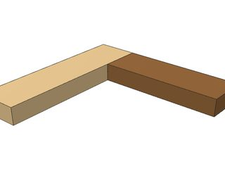
16
Media madera recta en esquina
Esquina de bastidor a media madera
Ciclos formativos de madera, mueble y corcho
Gira cada ensamble, mira cómo se monta y cómo se hace a mano en el taller: marcar con escuadra y gramil, serrar con el serrucho de costilla y vaciar con el formón.
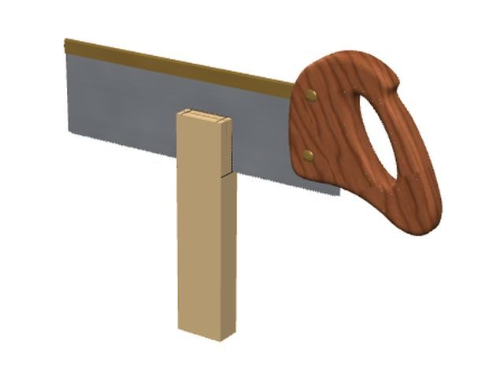
Funciona en el navegador, en el ordenador y en el móvil, sin instalar nada.
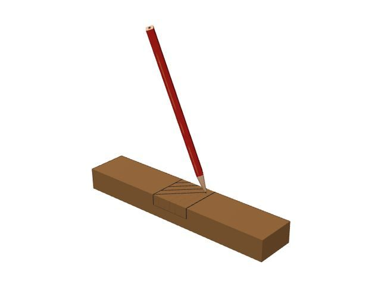
Cada ensamble con su proceso de taller animado: las herramientas en 3D, la pieza en el banco o en el tornillo y un consejo en cada paso.
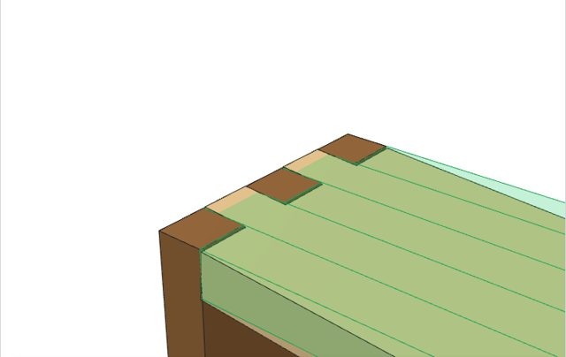
Los errores típicos —serrar por dentro o por fuera de la línea, hombro torcido, gramil movido— y cómo se notan al montar.
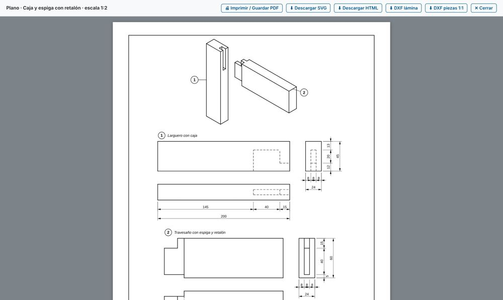
Planos acotados de cada pieza, cuaderno de prácticas y apuntes en PDF con todos los pasos e imágenes.
Pulsa uno para abrirlo directamente en 3D, o ve a su proceso a mano.

Esquina de bastidor a media madera
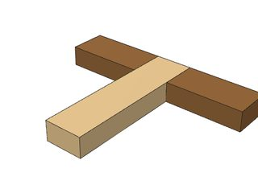
Travesaño a media madera en el centro de otra pieza
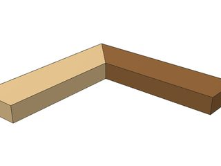
Esquina a media madera con la cara vista a 45°
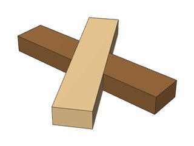
Unión en T a media madera con cola
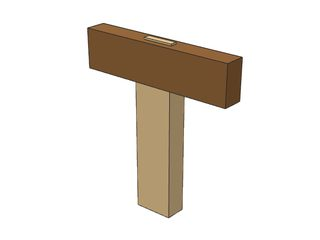
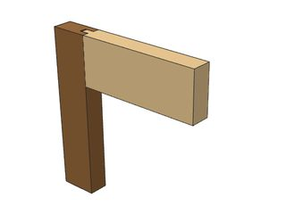
Esquina de bastidor con espiga y espaldón
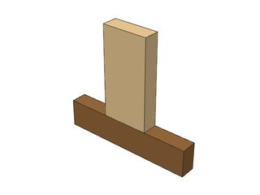
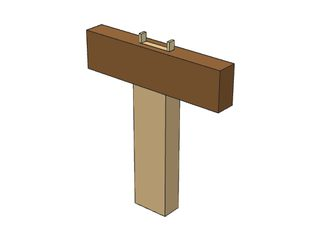
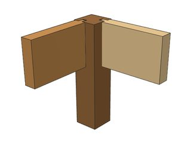
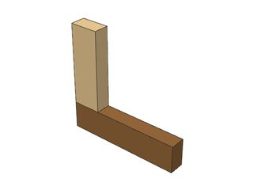
Esquina de bastidor con horquilla abierta
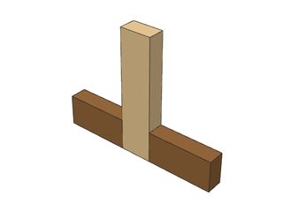
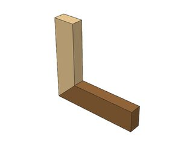
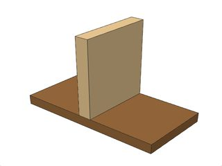
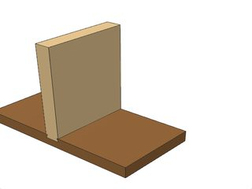
Ranura con flancos en cola: la balda entra deslizando
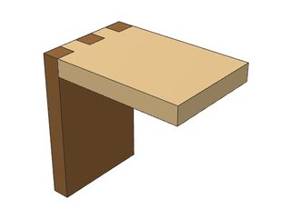
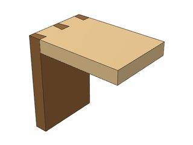
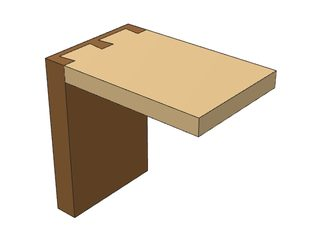
Frente de cajón: colas ocultas por la cara
La versión del profesor añade las herramientas para preparar el curso:
#mmT, #mmT/manual, #mmT/manual/5 o #mmT/errores al final de la dirección para abrir un ensamble, su proceso a mano, un paso concreto o sus errores típicos.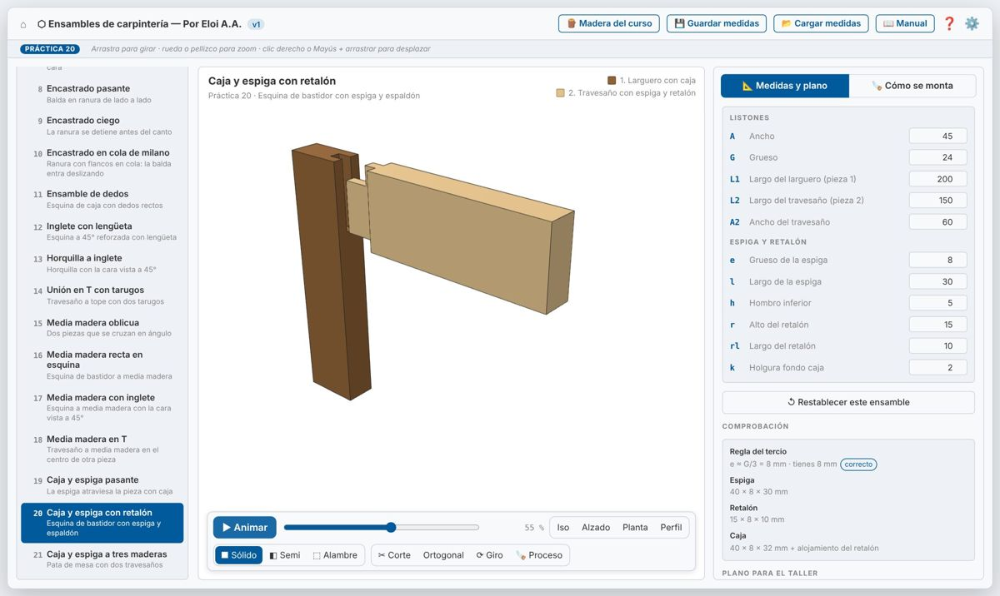
| Archivo | Qué es |
|---|---|
| ensambles_3d_alumno.html | Versión del alumnado, adaptada al móvil. |
| ensambles_3d.html | Versión del profesor: medidas, láminas, cuaderno, DXF y evaluación. |
| Apuntes · HTML · PDF | Los 21 ensambles hechos a mano, paso a paso (70 páginas). |
| Manual · HTML · PDF | Manual de uso del programa. |
modelos/ | Modelos 3D de las herramientas (GLB). |
Para usarlo sin internet o subirlo a Aules, descarga el repositorio completo (Code → Download ZIP en GitHub) y abre los archivos con doble clic. Mantén la carpeta modelos junto a los programas.